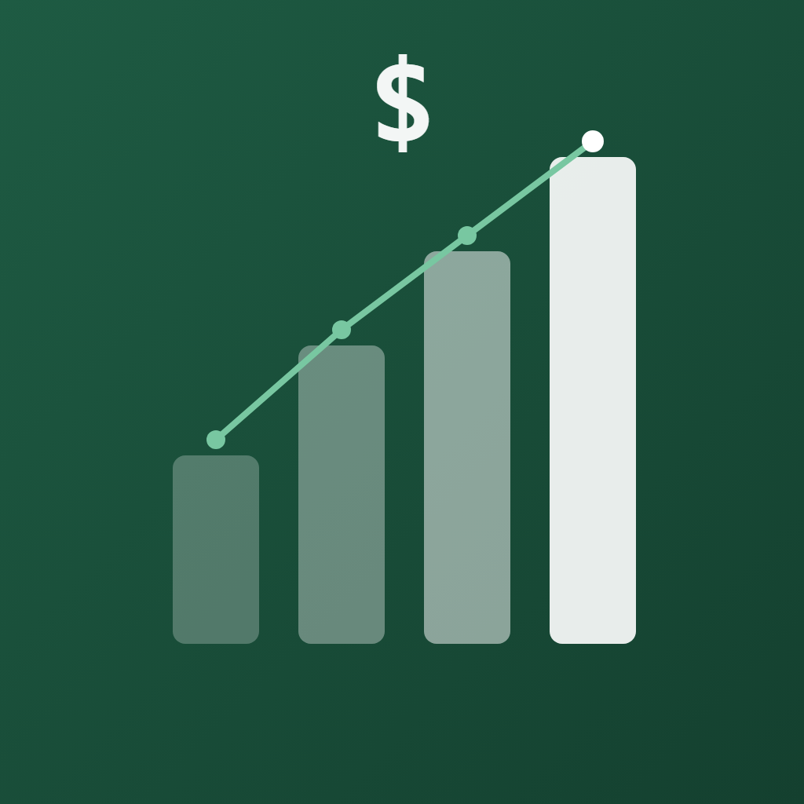

Mis Finanzas Personales
Controla tu plata mes a mes: cuánto te queda, en qué se va y cuánto vas juntando.
Qué puedes hacer
- Ver cuánto te queda para gastar este mes y cuánto puedes gastar por día.
- Anotar gastos por categoría, con topes y aviso cuando llegas al 80%.
- Llevar tus cuentas fijas, con recordatorio un día antes de que venzan.
- Registrar suscripciones que se anotan solas cada mes.
- Ver gráficos de a dónde va tu plata y comparar los últimos 6 meses.
- Crear metas de ahorro y seguir tu cartera de inversiones, también en dólares.
- Exportar tus movimientos a Excel.
Tus datos son tuyos
Todo lo que anotas se guarda solo en tu teléfono. No hay cuentas, publicidad ni rastreo. Puedes proteger la app con huella o Face ID y ocultar tu sueldo con un toque.